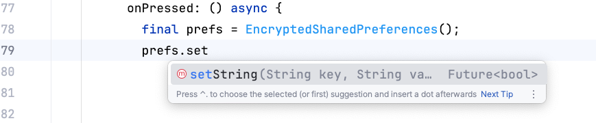

SharedPreferences let you save variables to your device and then retrieve them the next time you run the application. The SharedPreferences object uses the Singleton pattern, where there is only one object in the whole program. However, the SharedPreferences library is not normally part of flutter. You must use the "shared_preferences" package to your project. You can do this by opening a command terminal in the same folder as your project, and running the command flutter pub add shared_preferences. This should change your pubspec.yaml file to add the latest version of the shared_preferences package. To retrieve the object, we call:
// Load and obtain the shared preferences for this app.
void functionName() async {
final prefs = await SharedPreferences.getInstance();
}
In order to keep the application as responsive as possible, reading data from the hard disk is done asynchronously. The keyword await means to wait until the function returns. If your code must await for a function to return, then the function your are in must also be declared async. Or, you can use the .then() which is a function that will be called once the getInstance() has finished. The function getInstance() returns an object of type SharedPreferences, so the .then() function needs a lambda function that accepts the SharedPreference object what gets returned as the result:
SharedPreferences.getInstance().then((result) {
});
To write data to the disk, we have several setter functions to chose from:
There is a limit to what types of data you can save:
The first parameter is always the key (or variable name). The second parameter is the value that you want to save.
To retrieve the value, you use the getString("key") if you used setString().
If you used setInt("AA", value), then you would use getInt("AA") to get the value back.
If you used setDouble("BBB", value), then you would use getDouble("BBB") to get the value back.
The getter functions return nullable objects because the variable might not be saved yet.
If there is no value associated with the key, then the function returns null.
So in reality, getInt("AA") returns an object of type Int?, or nullable Int.
Normally you would use this when the user clicks a button, like "login" some other button. Whenever you read a variable and then want to save it, you can use the shared preferences:
void buttonPressed( ){
SharedPreferences.getInstance().then( (sharedPrefs) {
sharedPrefs.setString("LoginName", loginStringController.getValue().text);
} );
}
This will save the string that was typed along with the variable name "LoginName". The next time the user runs your application, your program will run the initState() function as it is loading. This is where you should be reading the values that were saved to disk:
var loginName = result.getString("Word");
if(loginName != null){
_controller.text = loginName;
}
If you want to just delete a value, then you can use the remove( ) function and pass in the key (or variable name) that you want to remove:
sharedPrefs.remove("LoginName");
This erases the data that was saved under the variable name (key) that was given.
There have been new data protection laws that were passed in Europe (GDPR), in Canada and the USA. These laws are all similar in requirements that require that any data that is saved must be anonymized (or encrypted). You should not be able to tell anything about a person by looking at the data on the disk in case your data is breached. Flutter offers a class called EncryptedSharedPreferences that does the encryption for you. You must add the encrypted_shared_preferences library with the command line:
flutter pub add encrypted_shared_preferences
Then you can created an EncryptedSharedPreferences object:
EncryptedSharedPreferences prefs = EncryptedSharedPreferences();
This object uses a SharedPreferences object internally and just adds the encryption algorithm to whatever you are inserting. It uses a default encryption algorithm of SIC ( https://stackoverflow.com/questions/70492520/where-can-i-find-more-information-on-aes-mode-sic) but you can supply a different algorithm if you need. Your choices are listed at the bottom of this page: https://pub.dev/packages/encrypted_shared_preferences
The EncryptedSharedPreferences object only supports storing String data since Int, Float, Boolean aren't really identifying data. If you really want to store numbers then you can just convert them to string and then encrypt the String.
